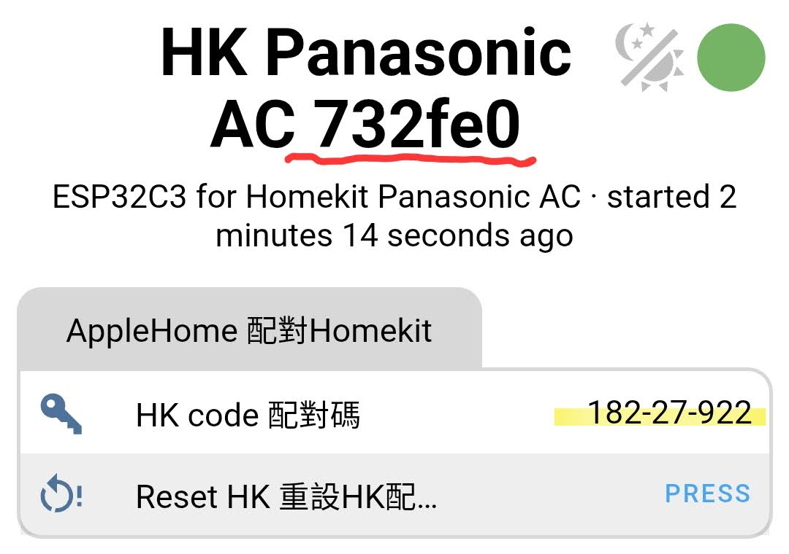
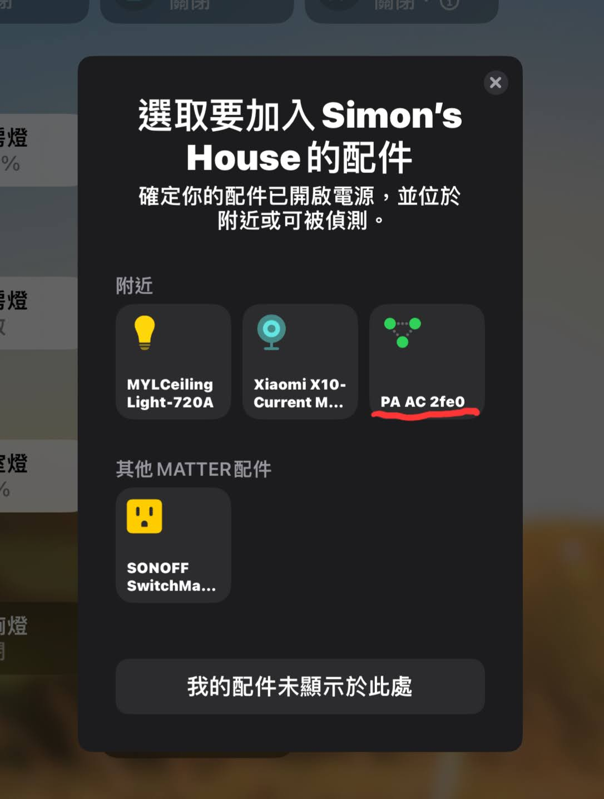
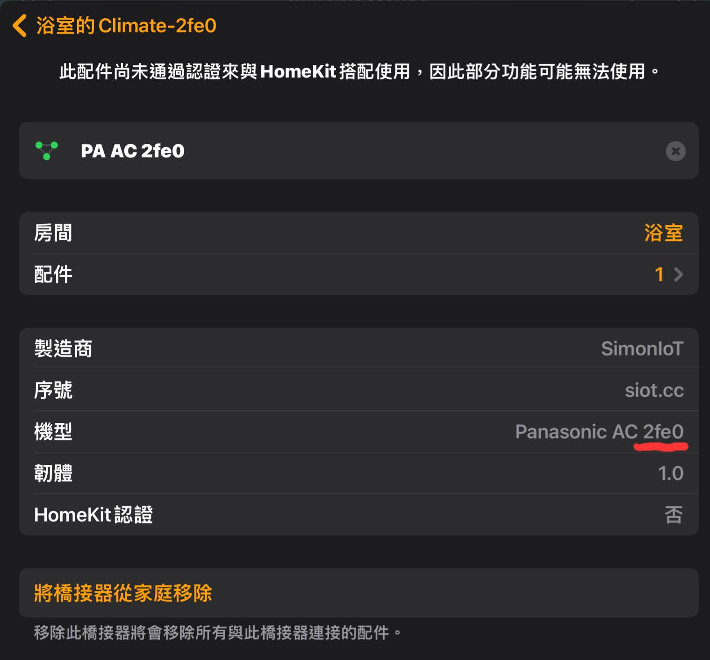
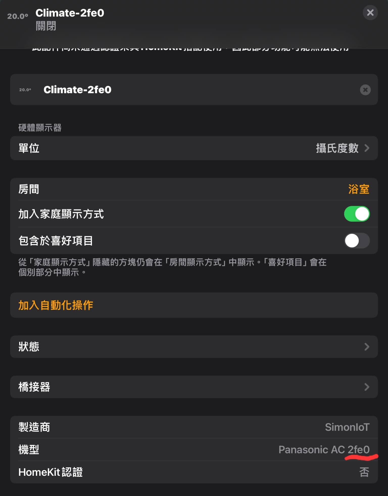
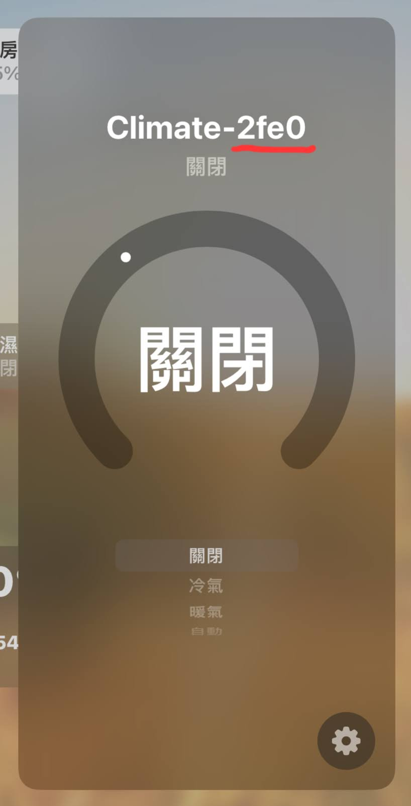

上機前務必確認插對地方！
如因插錯腳座造成模組或電器損壞恕不負責。
產品介紹
本模組除了可透過ESPhome接入 Home Assistant (HA) 外，還多了能直連 HomeKit 的功能，目前支援國際、日立、大金及三菱電機空調。
在裝置的 IP 頁面能看到 HomeKit 配對碼以及重設配對的按鈕。
加入 HomeKit 時，會顯示為一個橋接器 (Bridge)。
橋接器的名稱及機型後面都會帶 MAC 末四碼，方便辨識。
然後再將空調加入，空調的名稱及機型後面也都會帶 MAC 末四碼，不容易搞混。
接入 HomeKit 後的功能為：關閉、冷氣、暖氣 以及 調節溫度。（注意：沒有風速調整功能）

設定步驟
請先透過 USB 測試連線！
請先插上 USB 電源，確認模組可成功連上家中網路及 HA / HomeKit 後，再安裝到電器上。
-
開啟 Wi-Fi 熱點：
從模組的 USB-C 孔上電後，等待約 30 秒，模組會自動建立一個 Wi-Fi 熱點。
-
辨識您的設備：
根據您的空調品牌，選擇對應的 Wi-Fi 熱點名稱：
- 國際:
hk-ac-p - 日立:
hk-ac-ht - 大金:
hk-ac-dk - 三菱電機:
hk-ac-mt
- 國際:
-
連線至熱點：
熱點連線密碼為
12345678。連上後，在瀏覽器輸入網址 192.168.4.1 進入設定頁面。 -
設定 Wi-Fi 連線：
在設定頁面中，選擇您家中的 2.4GHz Wi-Fi 名稱，並輸入密碼，然後按下 SAVE。
-
確認設備上線：
模組重啟後會自動連上您家中的 Wi-Fi。您可以在路由器的管理頁面看到新設備，其名稱後面會附加 MAC 位址以供辨識。
-
整合至 HomeKit：
待裝置連上 Wi-Fi 後，請依照以下步驟手動加入 HomeKit：
- 至路由器的管理頁面，找到裝置的 IP 位址。
-
在瀏覽器中開啟該 IP 位址 (例如
http://192.168.x.x)，頁面上會顯示 HomeKit 配對碼。 - 打開 Apple「家庭 (Home)」App，點擊右上角「+」，選擇「加入配件」。
- 點擊「更多選項...」，應會自動搜尋到名稱結尾帶有 4位MAC 碼的「橋接器」。
- 點選該橋接器，並輸入您在 IP 頁面上看到的配對碼。
- 成功加入橋接器後，再依照提示將「空調」配件加入，即完成設定。
-
整合至 Home Assistant：
Home Assistant (HA) 通常會自動提示發現新設備，點擊加入即可。若無自動提示，請至 HA 的「設定」>「裝置與服務」>「新增整合」，搜尋並選擇 ESPhome，然後輸入模組的 IP 位址手動加入。
重設步驟
-
重設 HomeKit 配對 (遷移家庭)：
如需將模組遷移至其他家庭，請先至裝置 IP 頁面按下「Reset HK」右方的 PRESS 按鈕，再從「家庭」App 內刪除橋接器，即可換至新的家庭。
-
恢復出廠設定 (Factory Reset)：
在裝置 IP 頁面下方找到「Factory Reset 恢復出廠」，按下右方的 PRESS 按鈕，將會清除包含 Wi-Fi 在內的所有設定，需重新進行連線設定。